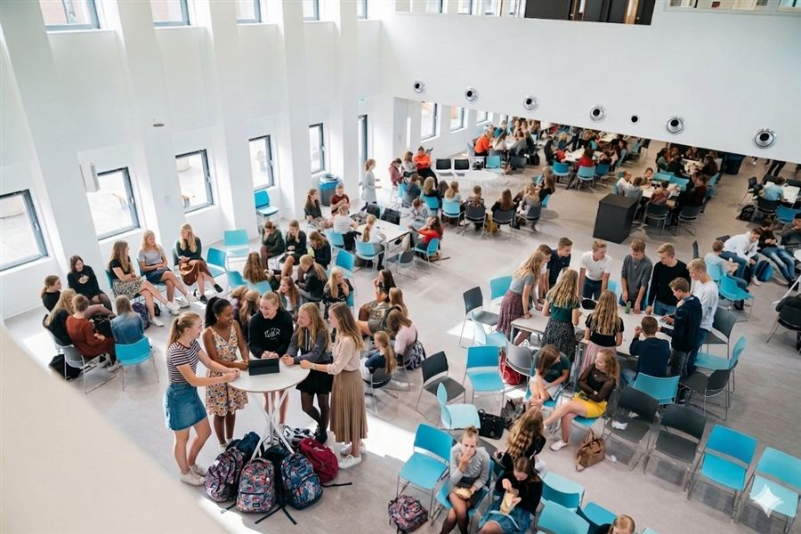

Welk lokaal zoek je?
Verdiepingen
Route
Tik op de kaart waar je staat.
Waar wil je heen?
Kies een lokaal.
Route in woorden
Lokalen
Badges
0 van 75 XP
Badges
Voortgang
Level 1
0 XP verdiend- Badges
- Verdiepingen bekeken
- Verschillende lokalen gekozen
Je voortgang staat alleen op deze telefoon.
Info
Zo gebruik je de Gebouwenroute. Tik op een onderdeel om het uit te klappen.
Aan de slagIn vier stappen naar je lokaal
- Tik onderaan op Lokalen en zoek je lokaal. Of tik op de home-pagina op een verdieping.
- Tik op je lokaal. Op de kaart verschijnt een pin op je bestemming.
- Geef aan waar je staat: tik op de kaart, kies Ik sta bij een lokaal of zet live locatie aan.
- Volg de lijn op de kaart. Staat je lokaal op een andere verdieping, dan loopt de lijn eerst naar de trap.
Een lokaal zoekenPer verdieping of met het zoekveld
Bij Lokalen staan alle verdiepingen onder elkaar, van de kelder tot en met verdieping 5. Tik op een verdieping om de lokalen te zien. Tik nog een keer om hem weer in te klappen.
Zoeken
Typ in het zoekveld bijvoorbeeld A.1.01. Punten en hoofdletters maken niet uit: a1.01 en a101 vinden hetzelfde lokaal. Je kunt ook zoeken op de naam van een ruimte of op een verdieping, bijvoorbeeld "teamkamer" of "verdieping 2". Verdiepingen met een treffer klappen vanzelf open.
Vanaf de home-pagina
Tik op een verdieping in de lijst op home. Je komt dan bij Lokalen, met die verdieping al uitgeklapt. Heb je eerder een route gekozen, dan staat die bovenaan home bij Verder naar je laatste bestemming.
Je startpunt kiezenZeg waar je nu bent
De route begint op het punt waar jij staat. Dat kan op drie manieren:
- Tik op de kaart. Kies eerst bovenaan de verdieping waar je bent (-1 is de kelder, BG de begane grond). Tik dan op de plek waar je staat. Tik ergens anders om het startpunt te verplaatsen.
- Ik sta bij een lokaal. Tik op deze knop onder de route en kies een lokaal in de buurt. De app zet je startpunt daar.
- Live locatie. De app volgt je met de blauwe stip. Lees hieronder hoe dat werkt.
Tip: binnen is GPS niet precies. Kies je een lokaal bij je in de buurt, dan klopt de route meestal beter.
De route volgenLijn, stappen en trappen
De route staat als een groene lijn op de plattegrond. Onder de kaart zie je hoeveel meter het is en hoe lang je ongeveer onderweg bent.
Route in woorden
Liever lezen dan kijken? Klap Route in woorden open voor de stappen, zoals "Sla rechtsaf en loop 11 m tot bij A.1.17". De lokalen die genoemd worden helpen je om te zien waar je moet afslaan.
Een andere verdieping
Moet je naar een andere verdieping, dan loopt de lijn naar de trap die voor jou het kortst is. Ben je boven of beneden aangekomen, tik dan op Ik ben op verdieping …. De app laat daarna het laatste stuk zien.
Aanpassen of stoppen
Met Andere bestemming kies je een ander lokaal. Met Stop route wis je de route.
De kaart gebruikenZoomen, schuiven en wat je ziet
Sleep met één vinger om de kaart te verschuiven en knijp met twee vingers om te zoomen. Met de knoppen + en − zoom je ook. De knop met de vier hoeken laat weer de hele plattegrond zien.
Wat zijn die tekens?
- Pin met een paaltje: je bestemming.
- Witte cirkel met een dikke rand: je startpunt.
- Blauwe stip: jij, bij live locatie.
- Lichtblauwe cirkel om de stip: hoe zeker de app van je plek is. Hoe groter de cirkel, hoe onzekerder.
Live locatieJezelf zien op de kaart
Tik op Mijn locatie rechtsboven bij de route, of op Live locatie aanzetten onder de kaart. Je telefoon vraagt dan of de app je locatie mag gebruiken. Kies Toestaan. Tik nog een keer om het weer uit te zetten.
De route wordt vanzelf opnieuw berekend zodra je een stukje loopt.
Goed om te weten
- Binnen is GPS grof: je plek kan 10 tot 60 meter afwijken. De app middelt de metingen en zet de stip op een plek waar je kunt lopen.
- De telefoon weet niet op welke verdieping je bent. Die kies je zelf met de knoppen boven de kaart.
- Het werkt het best met wifi aan en locatie op hoge nauwkeurigheid.
- Staat er "Je bent niet in het gebouw", dan zit je volgens je telefoon te ver weg.
Badges en voortgangVerdien punten met het gebruiken van de app
Door de app te gebruiken verdien je badges en XP, en daarmee level je op. Bij Badges zie je welke je hebt. Tik op een badge om te lezen hoe je hem haalt. Bij Profiel staan je level en wat je al bekeken hebt.
Je voortgang staat alleen op dit toestel. Wil je opnieuw beginnen, tik dan bij Profiel op Voortgang wissen.
Installeren en offlineDe app op je beginscherm
- Android (Chrome): tik op de knop met de pijl omlaag rechtsboven in de balk. Zie je die niet, open dan het browsermenu en kies "App installeren" of "Toevoegen aan startscherm".
- iPhone (Safari): tik op de deelknop en kies "Zet op beginscherm".
Na de eerste keer werken de plattegronden en de routes ook zonder internet. Komt er een nieuwe versie van de app, dan verschijnt onderin een melding. Tik erop om te vernieuwen.
Lukt het niet?Veelvoorkomende problemen
"Geen lokaal gevonden"
Controleer de schrijfwijze. Probeer het lokaalnummer zonder punten, of zoek op de naam van de ruimte.
"Het laatste stuk staat niet op de kaart"
In de bouwtekening ontbreekt hier een deur. De lijn stopt zo dichtbij als het kan. Zoek zelf de deur of volg de bordjes in het gebouw, en laat het weten zodat het aangevuld kan worden.
"Geen route gevonden vanaf dit punt"
Je startpunt ligt waarschijnlijk in een muur of buiten het gebouw. Tik op een andere plek of kies Ik sta bij een lokaal.
De blauwe stip staat op de verkeerde plek
GPS binnen is niet precies. Kies een startpunt via de kaart of via een lokaal in de buurt.
Live locatie werkt niet
Controleer of je de app toestemming hebt gegeven voor je locatie in de instellingen van je browser, en of locatie en wifi aanstaan op je telefoon.
Ik zie een oude versie
Sluit de app helemaal af en open hem opnieuw, of tik op de melding "Nieuwe versie beschikbaar".
Privacy
Je locatie wordt alleen op je telefoon gebruikt voor de stip op de kaart. Hij wordt niet verstuurd en niet bewaard. Je laatste bestemming en je voortgang blijven alleen op dit toestel staan.
Klopt er iets niet?
De plattegronden komen uit de bouwtekeningen. Mist er een deur of staat een lokaal op de verkeerde plek, laat het de docent of het project weten.
Gebouwenroute, versie 1.0, Hoornbeeck College Gouda